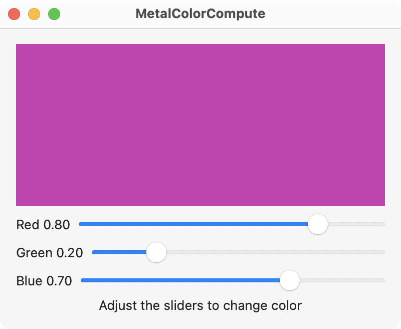

Here is a basic example of using Metal to change the color of a view using a compute function (kernel). The pixels in the view are represented in Metal as a grid. The sliders change the RGB color values for each pixel in the grid.

The main view is shown below and contains the MetalView() where the color is drawn.
// ContentView.swift
import SwiftUI
import MetalKit
struct ContentView: View {
@State private var mtkView = MTKView()
@State private var renderer: Renderer?
@State private var color = SIMD4<Float>(0.8, 0.2, 0.7, 1)
var body: some View {
VStack {
MetalView(mtkView: mtkView)
.onAppear {
renderer = Renderer(metalView: mtkView)
renderer?.color = color
renderer?.initializeBuffer()
}
Slider(value: $color.x, in: 0...1) {
Text("Red \(color.x, specifier: "%.2f")")
}
.onChange(of: color.x) { newValue in
renderer?.color.x = newValue
renderer?.initializeBuffer()
}
Slider(value: $color.y, in: 0...1) {
Text("Green \(color.y, specifier: "%.2f")")
}
.onChange(of: color.y) { newValue in
renderer?.color.y = newValue
renderer?.initializeBuffer()
}
Slider(value: $color.z, in: 0...1) {
Text("Blue \(color.z, specifier: "%.2f")")
}
.onChange(of: color.z) { newValue in
renderer?.color.z = newValue
renderer?.initializeBuffer()
}
Text("Adjust the sliders to change color")
}
.padding()
.frame(minWidth: 400, minHeight: 300)
}
}
The MetalView represents a MTKView as shown below. Notice the MTKView must be wrapped with a NSViewRepresentable for SwiftUI.
// MetalView.swift
import SwiftUI
import MetalKit
struct MetalView: NSViewRepresentable {
let mtkView: MTKView
func makeNSView(context: Context) -> some NSView {
return mtkView
}
func updateNSView(_ nsView: NSViewType, context: Context) { }
}
The Renderer object sets up the Metal device, pipeline, and buffers for drawing to the view. It also passes the color variable to the appropriate Metal buffer for assigning the RGB value to each pixel in the Metal view.
// Renderer.swift
import MetalKit
class Renderer: NSObject {
static var device: MTLDevice!
static var commandQueue: MTLCommandQueue!
var colorState: MTLComputePipelineState!
var colorBuffer: MTLBuffer!
var color = SIMD4<Float>()
init(metalView: MTKView) {
super.init()
guard let device = MTLCreateSystemDefaultDevice(),
let commandQueue = device.makeCommandQueue()
else {
fatalError("GPU not available")
}
Renderer.device = device
Renderer.commandQueue = commandQueue
let library = device.makeDefaultLibrary()
let colorScreen = library?.makeFunction(name: "colorScreen")
do {
colorState = try device.makeComputePipelineState(function: colorScreen!)
} catch let error as NSError {
print(error)
}
metalView.device = device
metalView.framebufferOnly = false
metalView.delegate = self
initializeBuffer()
}
func initializeBuffer() {
let size = MemoryLayout<SIMD4<Float>>.size
colorBuffer = Renderer.device.makeBuffer(bytes: &color, length: size)
}
}
extension Renderer: MTKViewDelegate {
func mtkView(_ view: MTKView, drawableSizeWillChange size: CGSize) { }
func draw(in view: MTKView) {
guard let drawable = view.currentDrawable else { return }
// Command buffer
let commandBuffer = Renderer.commandQueue.makeCommandBuffer()
// Command encoder
let commandEncoder = commandBuffer?.makeComputeCommandEncoder()
commandEncoder?.setComputePipelineState(colorState)
commandEncoder?.setTexture(drawable.texture, index: 0)
commandEncoder?.setBuffer(colorBuffer, offset: 0, index: 0)
// Threads
let w = colorState.threadExecutionWidth
let h = colorState.maxTotalThreadsPerThreadgroup / w
let threadsPerThreadGroup = MTLSize(width: w, height: h, depth: 1)
let threadsPerGrid = MTLSize(width: drawable.texture.width, height: drawable.texture.height, depth: 1)
commandEncoder?.dispatchThreads(threadsPerGrid, threadsPerThreadgroup: threadsPerThreadGroup)
// Complete encoding
commandEncoder?.endEncoding()
// Commit buffer
commandBuffer?.present(drawable)
commandBuffer?.commit()
}
}
Lastly, the kernel shader function outputs the color for each pixel in the Metal view.
// Shader.metal
#include <metal_stdlib>
using namespace metal;
kernel void colorScreen (texture2d<half, access::write> output [[texture(0)]],
device float4 *color [[buffer(0)]],
uint2 id [[thread_position_in_grid]])
{
output.write(half4(*color), id);
}
Gavin Wiggins © 2024